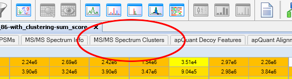
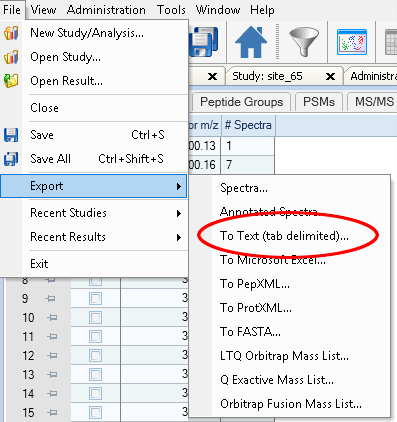

Analysing proteomics samples using spectrum clustering¶
This tutorial explains how to analyse and characterise samples without any identification data but only based on spectrum clustering results.
This is done by clustering your data and then extracting the spectral counts per cluster and sample.
Overview
Hint
As a prerequesite, you need to cluster your MS/MS data. The easiest way to do this is to use our new Proteome Discoverer node.
Exporting data from Proteome Discoverer results¶
To export the spectral counts for first select the spectrum clustering result table from your Proteome Discoverer result:
Next, simply use Proteome Discoverer’s export function to export the table into a text file:
You can now use the spectral counts of each cluster as features for your samples to characterise them using, for example, a principal component analysis.
Processing .clustering results¶
In case you clustered your data using any other of our tools you first need to extract the number of spectra per cluster and input file.
Installing the spectra-cluster-py toolchain¶
As a pre-requisite you need to install python 3 from http://www.python.org.
Installtion using PIP:¶
pip is already installed if you’re using Python 2 >=2.7.9 or Python 3 >=3.4 binaries downloaded from python.org. In case it is not, follow these instructions to install it: https://pip.pypa.io/en/stable/installing/
To install the spectra-cluster-py tools, open a command prompt, navigate to the folder where the spectra-cluster-py tools should be installed to and execute pip install https://github.com/spectra-cluster/spectra-cluster-py/zipball/master:
C:\> cd my_installation_directory
C:\my_installation_directory\> pip install https://github.com/spectra-cluster/spectra-cluster-py/zipball/master
Note: On some unix systems the pip command for python3 may be called pip3. In this case you need to use pip3 to install the spectra-cluster-py package.
Manual installation:¶
- Download the spectra-cluster-py tool from GitHub (click “Clone or download” and select “Download ZIP”)
- Extract the ZIP file
- Open the command line and navigate to the folder
- Install by running python setup.py
All subsequent tools refer to tools from the spectra-cluster-py tools.
Using clusters as features¶
In this analysis, the analysed samples are characterised by using the clusters as features and the number of spectra per sample as quantitative data.
The cluster_features_cli tools retrieves the number of spectra per cluster and sample (currently, per MGF file):
C:\my_result_dir>dir
my_clustering_results.clustering
C:\my_result_dir>cluster_features_cli --input my_clustering_results.clustering --output features.txt
Parsing input .clustering file............
Adding header line...
Results written to features.txt
The result file then contains the cluster ids as rows and the MGF filenames as columns:
cluster_id sample_1.mgf sample_2.mgf sample_3.mgf
f0f44a3f-4e0d-47c2-9996-a7ca521ad257 1 5
26947f51-a97d-4494-af18-981a5e9724a8 0 3 1
7f1f53d3-10ac-453f-b33d-65c512126868 7 0 0
Note: The first rows will not contain values for all columns. These must be set to zero. The example below shows how this can be done in R.
This data can then be imported, for example, in R to characterise samples using prinicapl components analysis.
R version 3.4.1
> features <- read.table("features.txt", header = T, sep = "\t", row.names = 1, fill = T)
> features[is.na(features)] <- 0
> fit <- prcomp(features)
> plot(fit$rotation[, "PC1"], fit$rotation[, "PC2"])